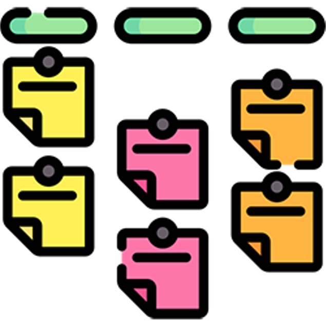
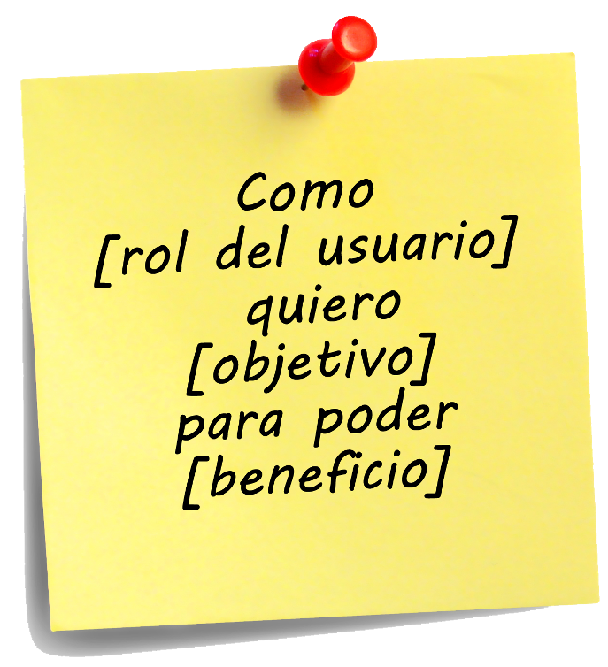
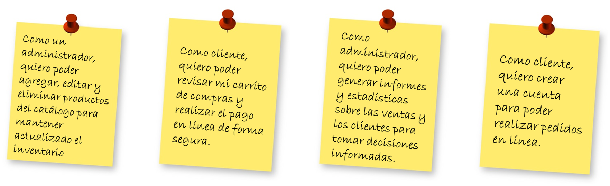
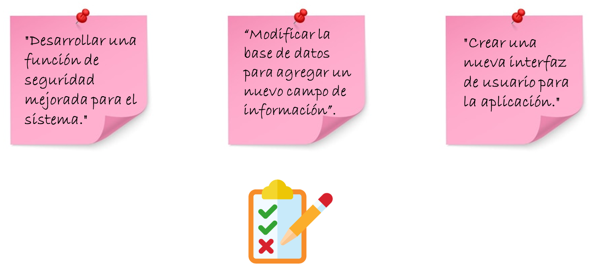
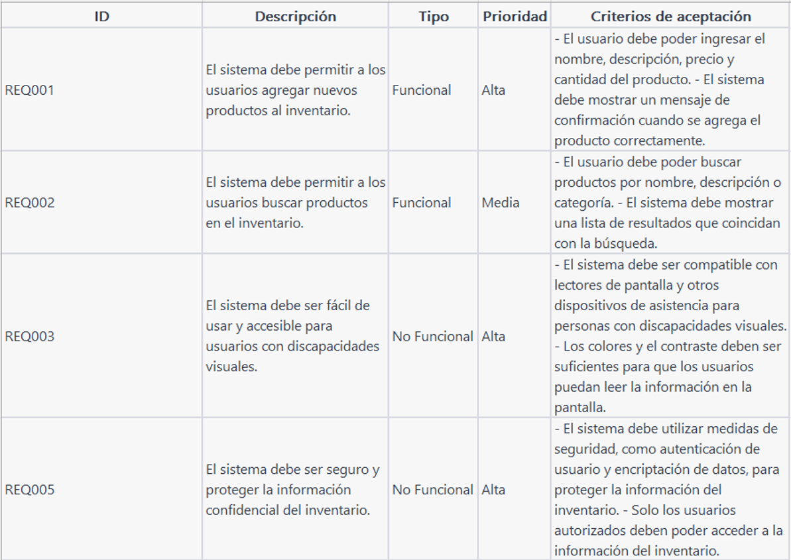
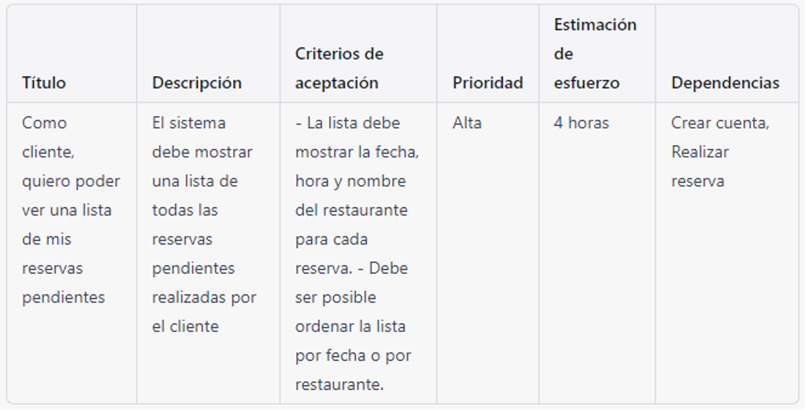
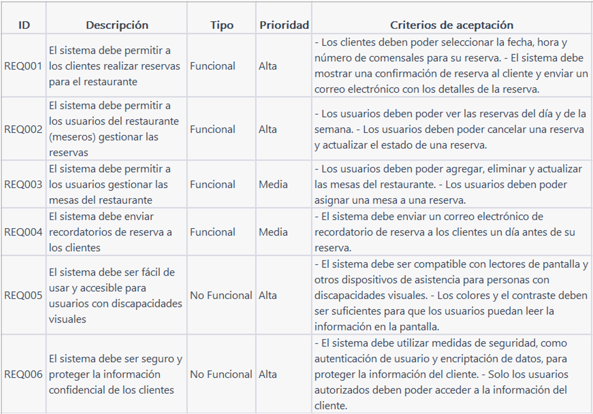

Unidad 6: Historias de usuario y casos de uso#
Contenido de la unidad#

Qué es una historia de usuario?#
Es una explicación escrita en lenguaje poco técnico sobre una función de software desde el punto de vista del usuario final. Las historias de usuario son utilizadas en la metodología ágil de desarrollo de software como parte de la fase de análisis de requisitos.
Tienen como propósito definir cómo una función del software agrega valor al cliente.
Estrutura de una historia de usuario#
Este documento es la unidad principal para metodologías ágiles de desarrollo. Es una descripción corta y simple de una característica contada desde la perspectiva del usuario final. Una historia de usuario describe una característica, que es algo que el usuario quiere hacer con el sistema.
Ejemplo de una historia de usuario#
¿Qué NO es una historia de usuario?#
Estos ejemplos NO son historias de usuario, porque no se enfocan en las necesidades del usuario ni en los objetivos específicos.
Son tareas técnicas o funcionales que deben ser llevadas a cabo para implementar una funcionalidad o mejorar un sistema, pero no están enfocadas en los beneficios que el usuario final obtendrá.
Ejemplo#
Ejercicio
Tomar las frases anteriores y reescribirlas como historias de usuario:
“Modificar la base de datos para agregar un nuevo campo de información.”
“Crear una nueva interfaz de usuario para la aplicación.”
“Desarrollar una función de seguridad mejorada para el sistema.”
Solución
“Como usuario, quiero tener la opción de agregar información adicional en mi perfil para que los demás usuarios puedan conocerme mejor.”
“Como usuario, quiero una interfaz de usuario más intuitiva y fácil de usar para poder completar tareas más rápido.”
“Como usuario, quiero sentirme seguro al usar la aplicación, por lo que deseo que se agregue una función de autenticación de dos factores.”
Ejercicio#
A partir del siguiente objetivo de negocio propuesto, realizar el análisis de los requerimientos funcionales, no funcionales y redactar las historias de usuario.
Objetivo de Negocio:
Desarrollar una plataforma en línea para la gestión de tareas que permita a los equipos de trabajo remotos coordinar sus actividades y mantenerse al día con los objetivos del proyecto.
Análicemos el proyecto…
Requerimientos funcionales…
El sistema permitirá el registro de usuarios con diferentes niveles de permisos (administrador, colaborador, etc.).
El sistema permitirá la creación de proyectos y asignación de tareas a los miembros del equipo.
El sistema permitirá visualizar un calendario de tareas y eventos, con recordatorios y notificaciones automáticas.
El sistema permitirá una comunicación en tiempo real entre los miembros del equipo, con la posibilidad de crear canales privados y públicos.
El sistema permitirá tener un historial de tareas y avances del proyecto, con la posibilidad de generar informes y estadísticas.
Requerimientos NO funcionales…
La plataforma debe ser segura y proteger la información del usuario.
Debe ser fácil de usar, con una interfaz intuitiva y amigable para el usuario.
La plataforma debe ser escalable y adaptable para trabajar con equipos de diferentes tamaños y necesidades.
Debe ser accesible desde cualquier dispositivo y navegador web.
La plataforma debe ser confiable, con un tiempo de actividad del 99,9% y copias de seguridad regulares.
Historias de usuario…
Como administrador, quiero poder crear y asignar tareas a los miembros del equipo para mantener el progreso del proyecto.
Como miembro del equipo, quiero recibir notificaciones automáticas cuando se me asigna una nueva tarea para estar al tanto de mis responsabilidades.
Como colaborador, quiero poder comunicarme con otros miembros del equipo en tiempo real para resolver problemas y hacer preguntas.
Como gerente de proyecto, quiero poder generar informes y estadísticas sobre el progreso del proyecto para tomar decisiones informadas.
Como usuario, quiero poder acceder a la plataforma desde mi teléfono móvil para poder revisar el progreso del proyecto mientras estoy en movimiento.
Ejercicio 2#
Dado el siguiente objetivo de negocio de un proyecto, determinar los requerimientos funcionales, no funcionales y las historias de usuario:
Objetivos de negocio
“Desarrollar un sistema que permita a los clientes realizar reservas en línea para un restaurante. El objetivo es mejorar la experiencia del cliente al permitirles reservar con anticipación y evitar tiempos de espera innecesarios en el restaurante”.
Desarrollen esto en parejas…
Formato para levantar historias de usuario y requerimientos#
Formato de historias de usuario#
Ejercicio 3#
Realicemos la aplicación de los formatos para el siguiente objetivo de negocio:
Objetivo de negocio:
Desarrollar un sistema que permita a los clientes realizar reservas en línea para un restaurante. El objetivo es mejorar la experiencia del cliente al permitirles reservar con anticipación y evitar tiempos de espera innecesarios en el restaurante.
Formato de requerimientos funcionales y NO funcionales#
Formato de historias de usuario#